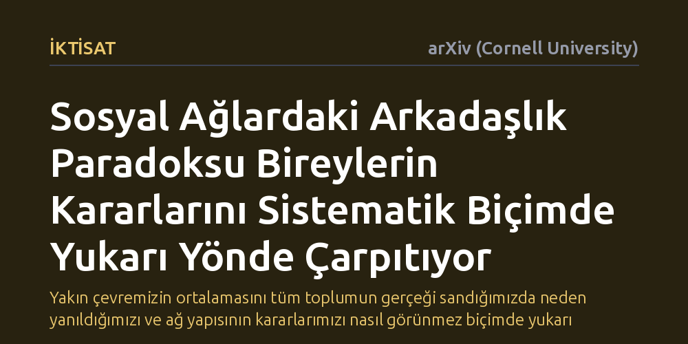

IKTISAT · arXiv (Cornell University) · 2026-10-22
Araştırmacılar, sosyal ağlardaki arkadaşlık paradoksunun bireylerin stratejik kararları üzerindeki nedensel etkilerini deneysel olarak inceledi. Katılımcıların genel toplum yerine daha bağlantılı arkadaşlarının ortalama davranışına göre hareket ettiği, bunun da kararları yukarı yönde çarpıtarak öğrenmeyle dahi düzelmediği bulundu.
Yakın çevremizin ortalamasını tüm toplumun gerçeği sandığımızda neden yanıldığımızı ve ağ yapısının kararlarımızı nasıl görünmez biçimde yukarı çektiğini gösterir.

Sosyal ağlarda matematiksel olarak ilginç ve köklü bir gerçeklik vardır: Ortalama olarak arkadaşlarınız, sizden daha fazla arkadaşa sahiptir. "Arkadaşlık paradoksu" olarak adlandırılan bu durum bir yanılsama değil, ağ topolojisinin doğal bir sonucudur. Çünkü çok sayıda bağlantıya sahip merkezi ve popüler bireyler, pek çok insanın arkadaş listesinde yer alır ve bu durum ortalamaları yukarı çeker.
Uzun süredir bilinen bu olgunun bugüne kadar sadece istatistiksel bir meraktan mı ibaret olduğu, yoksa insanların somut eylemlerini doğrudan yönlendirip yönlendirmediği belirsizliğini koruyordu. İnsanlar gündelik hayatlarında veya ekonomik tercihlerinde genellikle çevrelerini gözlemleyerek kararlar alır. Eğer gözlemlediğimiz çevre yapısal olarak taraflıysa, tüm toplumun ne yaptığını yanlış tahmin edebilir ve buna bağlı olarak hatalı adımlar atabiliriz.
Araştırmacılar, arkadaşlık paradoksunun insan davranışları üzerindeki nedensel etkilerini ilk kez test etmek amacıyla kontrollü bir laboratuvar deneyi kurguladı. Deneyde katılımcılar belirli ağ yapılarının içine yerleştirildi ve stratejik tamamlayıcılık içeren oyunlar oynatıldı. Bu mekanizmada bir bireyin elde edeceği nihai kazanç, kendi yerel arkadaşlarının değil, tüm popülasyonun sergilediği ortalama davranışa ne kadar doğru tepki verdiğine bağlıydı.
Deney tasarımının en kritik unsurlarından biri, öğrenme sürecinin test edilmesiydi. Katılımcıların yerel arkadaş çevrelerinin ortalaması ile toplumun genel ortalaması arasındaki farkı kavrayıp kavrayamayacaklarını anlamak için ağ içindeki konumları değiştirildi. Böylece bireylerin farklı bağlantı yoğunluğuna sahip pozisyonlara geçtiklerinde bu yapısal sapmayı fark edip kararlarını rasyonel yönde düzeltip düzeltemeyecekleri sınandı.
Deneyin sonuçları, bireylerin kararlarının ağdaki konumları tarafından sistematik biçimde çarpıtıldığını ortaya koydu. Katılımcılar, kazançlarını belirleyen genel toplum ortalamasını mantıksal olarak tahmin edip buna en uygun karşılığı vermek yerine, doğrudan kendi arkadaşlarının ortalama davranışına göre hareket ettiler. Arkadaşlık paradoksu gereği arkadaşlar ortalamada daha merkezi ve yüksek eylem düzeyine sahip olduğundan, bu durum bireylerin kararlarında sistematik ve yukarı yönlü bir şişmeye neden oldu.
Çalışma ayrıca bu durumun davranışsal saçılmayı da artırdığını, yani ağın farklı düğümlerindeki bireyler arasındaki eylem uçurumunu derinleştirdiğini saptadı. En çarpıcı bulgu ise bu sapmanın öğrenme fırsatlarına rağmen ısrarla sürmesiydi. Katılımcılar ağ içinde yeni konumlara taşınarak yerel gözlemleriyle genel ortalama arasındaki farkı deneyimleme fırsatı bulduklarında dahi bu bilişsel önyargıyı aşamadılar.
Bu bulgular, sosyal ağların insan kararlarını sadece akran baskısı veya bilgi akışı üzerinden değil, ağın geometrisinden kaynaklanan yapısal bir taraflılık yoluyla da şekillendirdiğini gösteriyor. Kendi çevremizdeki hareketliliği toplumun genel normu sandığımızda, matematiksel bir illüzyonun esiri oluyoruz. Tüketim alışkanlıklarından finansal risk almaya kadar pek çok alanda, popüler ve aşırı aktif çevrelere maruz kalmak kararlarımızı yukarı yönde çarpıtabilir.
Çalışmanın en düşündürücü yönü, deneyim kazanmanın veya konumu değiştirmenin bu yanılgıyı kolayca giderememesidir. İnsan zihni, kendi yakın çevresinin sunduğu canlı örneklere aşırı ağırlık verip temsil yeteneği olmayan bu veriyi tüm dünyaya genelleyebilmektedir. Sosyal platformların ve etkileşim ağlarının insan davranışlarını nasıl yönlendirdiğini anlamak için ağ yapısının getirdiği bu asimetriyi hesaba katmak zorundayız.